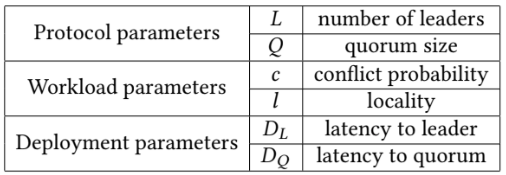

Consensus protocols performance varies based on different network, workload, and deployment conditions. The study includes single-leader, multi-leader, hierarchical multi-leader, and leaderless (opportunistic leader) consensus protocols, and present a comprehensive evaluation of their performance in local area networks (LANs) and wide area networks (WANs). We present an analytic modeling of the protocols using queuing theory and show simulations under varying controlled parameters. To cross-validate the analytic model, we also present empirical results from our prototyping and evaluation framework, Paxi. We distill our findings to simple throughput and latency formulas over the most significant parameters. These formulas enable the developers to decide which category of protocols would be most suitable under given deployment conditions.
Two main contributions, analysis and empirical studies. In the analysis, the paper used a queuing theory based model. The model captures parameters impacting throughput, such as internode latencies, node processing speed, network bandwidth, and workload characteristics. In the empirical study, the paper used Paxi, https://github.com/ailidani/paxi.
In terms of throughput : L/(1 + c)(Q + L − 2) and
latency :(1+c)*((1−l)*(DL+ DQ)+l * DQ).

Protocol parameters: increasing the number of leaders is good for availability: In Paxos, failure of the single leader leads to unavailability until a new leader is elected, but in multi leader protocols most requests do not experience any disruption in availability, as the failed leader is not in their critical path. Another protocol revision that helps to improve throughput and latency is to reduce Q, the quorum size, provided that fault-tolerance requirements are still met. Workload parameters: are concerned, reducing conflict probability and increasing locality (in the presence of mul- tiple leaders) are beneficial. However, there is an interplay between the number of leaders and probability of conflicts: increasing the number of leaders (which helps for throughput and latency) may cause an increase on conflicts (which hurts throughput and latency). EPaxos [30] protocol suffers from this problem. Multi-leader protocols that learn and adapt to locality, such as WPaxos [1] and WanKeeper [2], are less susceptible to this problem. The deployment parameters, distance to the leader and distance from leader to the quorum number of nodes, also have a big effect on the latency in WAN deployments. In WANs, other factors also affect latency. The asymmetric distances between datacenters, the access pattern locality, and unbalanced quorum distances complicate forecasting the performance WAN deployments.